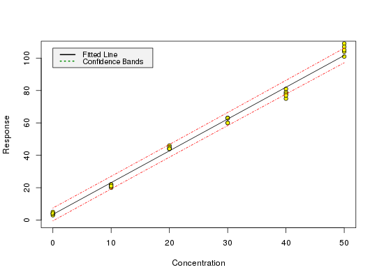

data(massart97ex3)
Sample dataset from p. 188 to test the package.
A dataframe containing 6 levels of x values with 5 observations of y for each level.
Massart, L.M, Vandenginste, B.G.M., Buydens, L.M.C., De Jong, S., Lewi, P.J., Smeyers-Verbeke, J. (1997) Handbook of Chemometrics and Qualimetrics: Part A, Chapter 8.
data(massart97ex3) attach(massart97ex3)Die folgenden Objekte sind maskiert von massart97ex3 (pos = 3): x, yyx <- split(y, x) ybar <- sapply(yx, mean) s <- round(sapply(yx, sd), digits = 2) w <- round(1 / (s^2), digits = 3) weights <- w[factor(x)] m <- lm(y ~ x, w = weights) calplot(m)Warning message: Assuming constant prediction variance even though model fit is weighted
# The following concords with the book p. 200 inverse.predict(m, 15, ws = 1.67) # 5.9 +- 2.5$Prediction [1] 5.865367 $`Standard Error` [1] 0.8926109 $Confidence [1] 2.478285 $`Confidence Limits` [1] 3.387082 8.343652inverse.predict(m, 90, ws = 0.145) # 44.1 +- 7.9$Prediction [1] 44.06025 $`Standard Error` [1] 2.829162 $Confidence [1] 7.855012 $`Confidence Limits` [1] 36.20523 51.91526# The LOD is only calculated for models from unweighted regression # with this version of chemCal m0 <- lm(y ~ x) lod(m0)$x [1] 5.407085 $y 1 13.63911# Limit of quantification from unweighted regression loq(m0)$x [1] 13.97764 $y 1 30.6235# For calculating the limit of quantification from a model from weighted # regression, we need to supply weights, internally used for inverse.predict # If we are not using a variance function, we can use the weight from # the above example as a first approximation (x = 15 is close to our # loq approx 14 from above). loq(m, w.loq = 1.67)$x [1] 7.346195 $y 1 17.90777# The weight for the loq should therefore be derived at x = 7.3 instead # of 15, but the graphical procedure of Massart (p. 201) to derive the # variances on which the weights are based is quite inaccurate anyway.